CYLINDER BLOCK > REASSEMBLY |
| 1. INSTALL NO. 1 OIL NOZZLE SUB-ASSEMBLY |
 |
Using a 5 mm hexagon socket wrench, install the 3 oil nozzles with the 3 bolts.
| 2. INSTALL PISTON PIN HOLE SNAP RING |
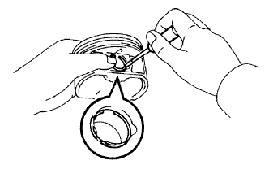 |
Using a screwdriver, install a new snap ring on one side of the piston pin hole.
| 3. INSTALL WITH PIN PISTON SUB-ASSEMBLY |
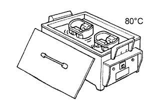 |
Gradually heat the piston to approximately 80°C (176°F).
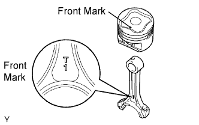 |
Coat the piston pin with engine oil.
Align the front marks of the piston and connecting rod, and push in the piston pin with your thumb.
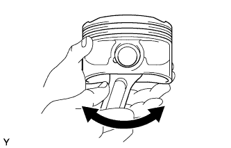 |
Check the fitting condition between the piston and piston pin by trying to move the piston back and forth on the piston pin.
| 4. INSTALL PISTON PIN HOLE SNAP RING |
Using a screwdriver, install a new snap ring at the other end of the piston pin hole.
| 5. INSTALL PISTON RING SET |
Install the oil ring (expander) and 2 side rails by hand.
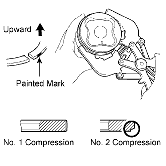 |
Using a piston ring expander, install the 2 compression rings.
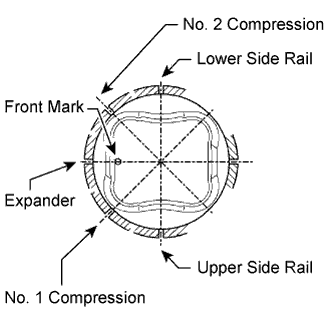 |
Position the piston rings so that the ring ends are as shown in the illustration.
| 6. INSTALL CONNECTING ROD BEARING |
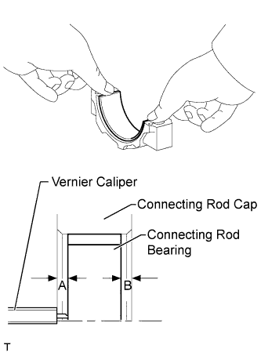 |
Install the bearing to the connecting rod cap.
Using a vernier caliper, measure the distance between the connecting rod cap edge and connecting rod bearing edge.
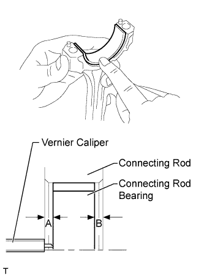 |
Install the bearing to the connecting rod.
Using a vernier caliper, measure the distance between the connecting rod edge and connecting rod bearing edge.
| 7. INSTALL CRANKSHAFT BEARING |
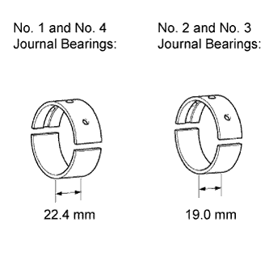 |
Clean each main journal and bearing.
Install the upper bearing.
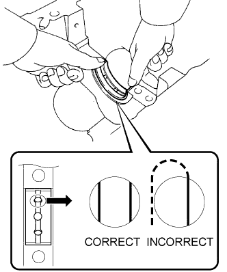 |
Install the upper bearing to the cylinder block as shown in the illustration.
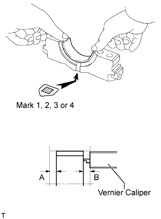 |
Install the lower bearing.
Install the lower bearings to the crankshaft bearing caps.
Using a vernier caliper, measure the distance between the edge of the crankshaft bearing cap and the edge of the lower bearing.
| 8. INSTALL CRANKSHAFT |
Apply new engine oil to the upper bearing and install the crankshaft to the cylinder block.
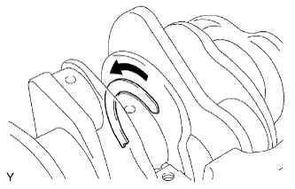 |
Push the crankshaft in the rear thrust direction to create clearance, and install a thrust washer to the No. 2 journal position with the oil groove facing the front of the engine.
Push the crankshaft in the forward thrust direction to create clearance, and install a thrust washer to the No. 2 journal position with the oil groove facing the rear of the engine.
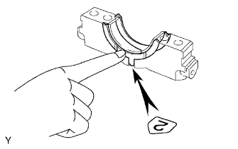 |
Install the 2 lower thrust washers on the No. 2 bearing cap with the grooves facing outward.
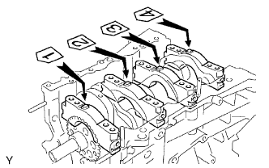 |
Examine the front marks and numbers and set the crankshaft bearing caps on the cylinder block.
Apply a light coat of engine oil to the threads of the crankshaft bearing cap bolts.
Temporarily install the 8 crankshaft bearing cap bolts to the inside positions.
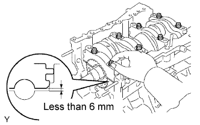 |
Tighten the 2 bolts for each bearing cap until the clearance between the crankshaft bearing cap and the cylinder block becomes less than 6 mm (0.236 in.).
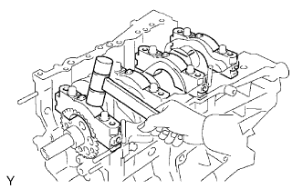 |
Using a plastic-faced hammer, lightly tap the crankshaft bearing cap to ensure a proper fit.
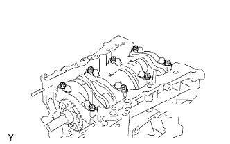 |
Apply a light coat of engine oil to the threads of the crankshaft bearing cap bolts and temporarily install the 8 crankshaft bearing bolts to the outside pistons.
Step 1:
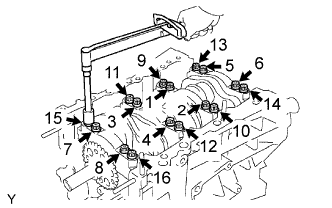 |
Uniformly tighten the 16 bolts in the several steps in order shown in the illustration.
Step 2:
 |
Mark the front side of the crankshaft bearing cap bolts with paint.
Tighten the bearing cap bolts 90° in the order shown in step 1.
Check that the painted marks are now at a 90° angle to the front.
Check that the crankshaft turns smoothly.
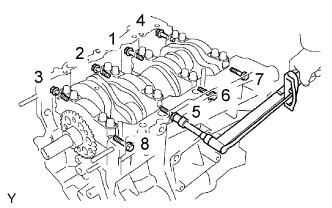 |
Using several steps, install the 8 crankshaft bearing cap bolts uniformly in the sequence shown in the illustration.
Check that the crankshaft turns smoothly.
| 9. INSPECT CRANKSHAFT THRUST CLEARANCE |
 |
Using a dial indicator, measure the thrust clearance while prying the crankshaft back and forth with a screwdriver.
| 10. INSTALL PISTON SUB-ASSEMBLY WITH CONNECTING ROD |
Apply engine oil to the cylinder walls, pistons, and surfaces of the connecting rod bearings.
Check the positions of the piston ring ends.
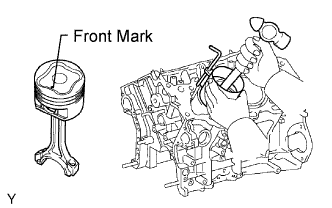 |
Using a hammer handle and piston ring compressor, press a piston and connecting rod assembly into each cylinder with the front mark of the piston facing forward.
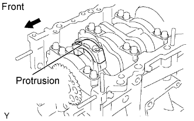 |
Set the connecting rod cap so that the protrusion is facing the correct direction.
Apply a light coat of engine oil to the threads of the connecting rod cap bolts.
Step 1:
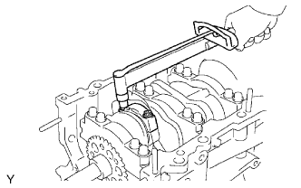 |
Install and alternately tighten the bolts of the connecting rod cap in several steps.
Step 2:
Mark the front side of each connecting rod cap bolt with paint.
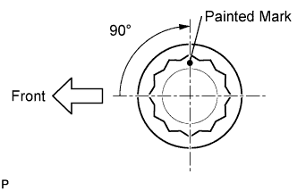 |
Tighten the cap bolts in step 1 90°.
Check that the painted marks are now at a 90° angle to the front.
Check that the crankshaft turns smoothly.
| 11. INSPECT CONNECTING ROD THRUST CLEARANCE |
 |
Using a dial indicator, measure the thrust clearance while moving the connecting rod back and forth.